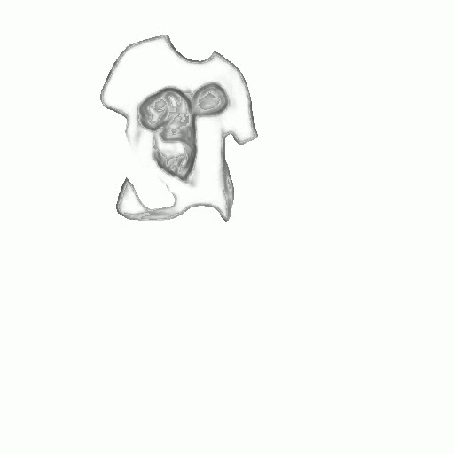
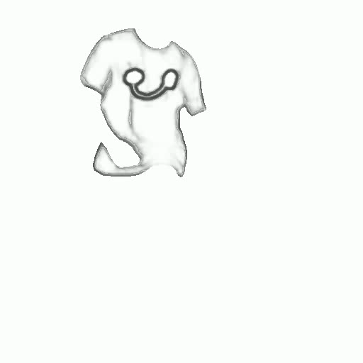

VIRES: Video Instance Repainting via Sketch and Text Guided Generation
1National Key Laboratory for Multimedia Information Processing, School of Computer Science, Peking University
2National Engineering Research Center of Visual Technology, School of Computer Science, Peking University
3OpenBayes Inc 4School of Software and Microelectronics, Peking University
5School of Artificial Intelligence, Beijing University of Posts and Telecommunications
2National Engineering Research Center of Visual Technology, School of Computer Science, Peking University
3OpenBayes Inc 4School of Software and Microelectronics, Peking University
5School of Artificial Intelligence, Beijing University of Posts and Telecommunications

Showcases produced by our VIRES
| Mask | Sketch | Input | Result |
|---|---|---|---|
| The man is dressed in a blue shirt, walking in the park. | |||
| A dark-colored SUV is seen driving on the curve of the road, away from the camera. | |||
| A corgi, with its orange and white fur, runs towards the camera. | |||
| A football field with a brown-green graffiti wall as the background. | |||
First sketch frame guidance video repainting
| Mask | Sketch | First sketch frame | Input | Result |
|---|---|---|---|---|
|  | ||||
|  | ||||
| A person in a park, wearing a white t-shirt with scattered graffiti on it. | ||||
Long-duration video repainting
| Mask | Sketch | Input | Result | |
|---|---|---|---|---|
| A woman wears a black leather jacket, black leggings, and black boots with a brown shoulder bag slung across her body, walking towards two cars. | ||||
Sketch-to-video repainting
Sketch-to-video generation
| Sketch | Original | Ours (VIRES) | VideoComposer | |
|---|---|---|---|---|
| A lotus flower in full bloom, with delicate pinkish-white petals. | ||||
Sketch-to-video inpainting
| Mask | Sketch | Original |
|---|---|---|
| Input | Ours (VIRES) | VideoComposer |
| A soccer ball is predominantly white with blue patterns. | ||
| Mask | Sketch | Original |
| Input | Ours (VIRES) | VideoComposer |
| A brown bear is walking towards the right side of the frame. | ||
| Mask | Sketch | Original |
| Input | Ours (VIRES) | VideoComposer |
| A white lotus flower in full bloom, with its delicate petals spread out. | ||
Comparisons with stat-of-the-art methods
| Mask | Sketch | Input | Ours (VIRES) | |
|---|---|---|---|---|
| Rerender | VidToMe | Text2VideoZero | RAVE | VideoComposer |
| A brown horse with a shiny coat, trotting within an enclosed sandy area. | ||||
| Mask | Sketch | Input | Ours (VIRES) | |
| Rerender | VidToMe | Text2VideoZero | RAVE | VideoComposer |
| A players wears a light green jersey with the white number 1 on the back. | ||||
| Mask | Sketch | Input | Ours (VIRES) | |
| Rerender | VidToMe | Text2VideoZero | RAVE | VideoComposer |
| The man is dressed in a blue shirt, walking in the park. | ||||
| Mask | Sketch | Input | Ours (VIRES) | |
| Rerender | VidToMe | Text2VideoZero | RAVE | VideoComposer |
| A dark-colored SUV is seen driving on the curve of the road, away from the camera. | ||||
| Mask | Sketch | Input | Ours (VIRES) | |
| Rerender | VidToMe | Text2VideoZero | RAVE | VideoComposer |
| A corgi, with its orange and white fur, runs towards the camera. | ||||
| Mask | Sketch | Input | Ours (VIRES) | |
| Rerender | VidToMe | Text2VideoZero | RAVE | VideoComposer |
| A football field with a brown-green graffiti wall as the background. | ||||
BibTeX
@article{vires,
title={VIRES: Video Instance Repainting via Sketch and Text Guided Generation},
author={Weng, Shuchen and Zheng, Haojie and Zhang, Peixuan and Hong, Yuchen and Jiang, Han and Li, Si and Shi, Boxin},
journal={arXiv preprint arXiv:2411.16199},
year={2024}}